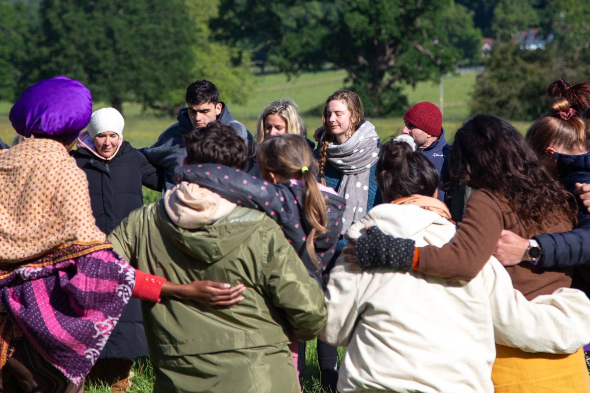

Can a Beginner Do a Vipassana Retreat?
Never meditated? You can still do a silent vipassana retreat. A teacher answers the common worries: sitting, silence, emotions, sleepiness, and whether you'll "fail".
Read · 3 min
This is the core technique we teach on our retreats. It comes from Mahasi Sayadaw, the Burmese master whose method is studied by monks and nuns across Burma and Thailand. It's based directly on the Buddha's four foundations of mindfulness.
It's simple. Not easy, but simple. Let's begin.
Sit on a cushion, bench or chair. Hips a little higher than the knees. Spine upright, not rigid. Hands resting in your lap. Close your eyes.
Take a moment to arrive. Sitting. Touching. Feel where the body touches the floor.
Bring attention to the abdomen, around the navel. As you breathe in, the belly rises. As you breathe out, it falls.
Don't control the breath. Just watch. If you can't find the movement, put a hand on the belly for a moment, or try it lying down first, then sit up and continue.
As the belly rises, softly note in the mind: rising. As it falls: falling.
It's not a mantra. You only say rising when there is rising. It must match what you actually feel. Each rising has a beginning, a middle and an end. Each falling has a beginning, a middle and an end. Try to be with the whole of it.
If there's a pause between breaths, wait. Like a sniper, not moving. Then the next rising starts, and you catch it.
It will. A thousand times. When you notice you've been thinking, note it: thinking, thinking. Or more precisely: planning, remembering, imagining.
Then come back to rising, falling.
Don't finish the thought first. One meditator in Thailand told me that was his big discovery: "I always thought I had to finish a thought before moving on. It's a liberation that I can just drop it." Drop it the moment you notice.
Rising and falling is your home base, your main object. But if something else becomes stronger, note that instead, then come home:
We label the process, not the object. Not "my knee", but pressure. Not "my sadness", but sadness.
Note, know, let go. Note, know, let go.
Controlling the breath. That's meditating with desire. Note controlling, then wait for the breath to come by itself.
Noting too loudly in the mind. The note is soft, about 5% of your attention. 95% is feeling the actual thing.
Mixing techniques. If you've done breath at the nose or body scanning, put it aside for now. Give this one full power.
Beating yourself up. Listen to your tone when you catch the mind wandering. "Huh! Got you again!" Or kind? Discipline is just doing it when you remember.
Start with 20 minutes a day. Add 10 minutes of walking meditation before, and your sitting improves a lot. Build to 45 minutes when you can.
Then, between sittings, keep noting. Eating, washing, walking. That's the real secret of this method: it doesn't stop when you get up from the cushion.
To go deeper, the best way is a week of continuous practice with a teacher. See our silent retreats, or read the Buddha's own words on mindfulness in the Satipaṭṭhāna Saṁyutta.
Practise this with a teacher, in silence, by the river. Seven days at Hardwick, 2027.
Book a placeHave a question about the practice? Ask Ananda, our Dhamma assistant.

Never meditated? You can still do a silent vipassana retreat. A teacher answers the common worries: sitting, silence, emotions, sleepiness, and whether you'll "fail".
Read · 3 minAn honest, respectful comparison of the S.N. Goenka 10-day vipassana course and a 7-day Mahasi-style insight retreat: technique, schedule, teacher contact, yoga, cost and waiting lists.
Read · 3 min
Packing list for a silent camping meditation retreat in the UK: clothes for 4:30am sits, bedding, meditation cushion, what to leave at home, and how to handle your phone.
Read · 3 min